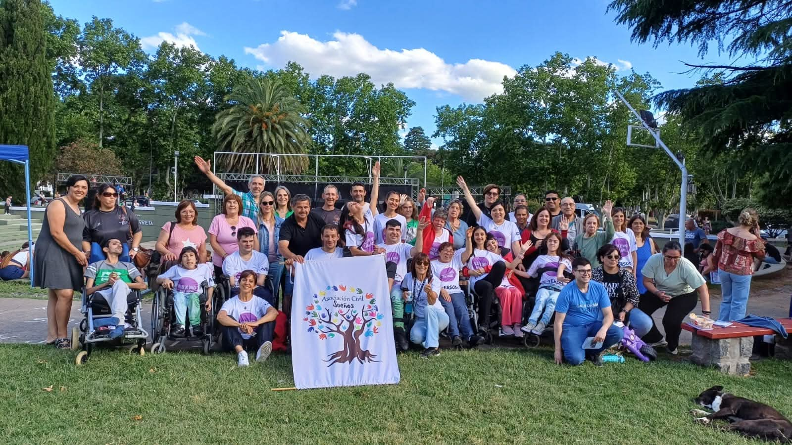
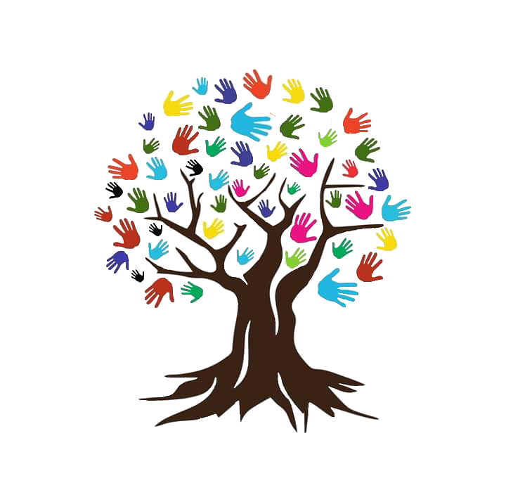

Asociación Civil Sueños nació de la experiencia y el compromiso de familias de personas con discapacidad que comprendieron la importancia de acompañar a quienes atraviesan situaciones similares. Con el deseo de brindar apoyo, compartir experiencias y generar oportunidades, nos unimos junto a personas de la comunidad para construir un espacio basado en la inclusión, la empatía y la solidaridad.

Buscamos acompañar a las personas con discapacidad y sus familias, brindando herramientas y orientación que favorezcan el acceso a sus derechos y contribuyan a una vida plena e inclusiva. También buscamor promover acciones de concientización para construir una comunidad más empática y comprometida.
Creemos en una sociedad donde todas las personas tengan las mismas oportunidades de participar, desarrollarse y ser escuchadas.
Escuchamos, comprendemos y acompañamos desde el respeto y la sensibilidad hacia las experiencias de cada persona y familia.
Trabajamos en comunidad, construyendo redes de apoyo que fortalezcan a quienes más lo necesitan.
Actuamos con responsabilidad y dedicación para promover los derechos y el bienestar de las personas con discapacidad.
Valoramos la diversidad y reconocemos la dignidad de cada persona, respetando sus decisiones, necesidades y proyectos de vida.
Impulsamos acciones que fomenten el conocimiento, la reflexión y la construcción de una comunidad más justa e inclusiva.
Nuestro logo refleja la esencia y los valores que dieron origen a la Asociación Civil Sueños. Representa la diversidad, la inclusión y el crecimiento. Los distintos colores simbolizan las diferentes condiciones y realidades que acompañamos; las manos reflejan el apoyo y la contención que brindamos; y el árbol representa el nacimiento y desarrollo de nuestra institución.
